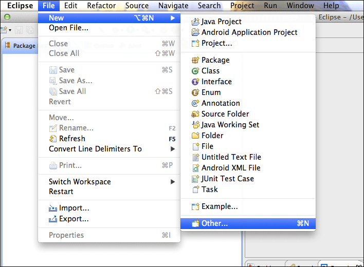
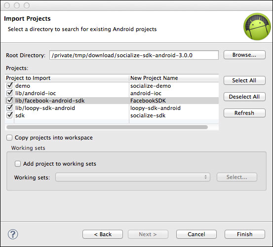
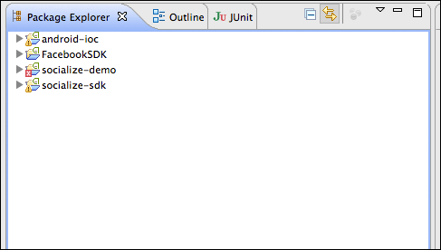

Getting Started¶
Note
Socialize supports Android v2.2 and above and does not support LDPI devices.
IMPORTANT NOTE FOR USERS UPGRADING¶
If you are currently using an earlier version of Socialize (before v2.8) you will notice we no longer distribute a JAR file.
YOU MUST DELETE THE EXISTING socialize-xxx.jar FILE before importing the new version.
In addition, a new activity definition is required in your AndroidManifest.xml for Facebook. (see below)
Introduction¶
Socialize is a drop-in social platform for iOS and Android which allows developers to add social features to their app in a matter of minutes.
What’s New¶
If you’re a Socialize veteran, check out our What’s New section for latest updates.
5 Steps to Using Socialize¶
1. Install the SDK¶
The Socialize SDK is delivered as an Android Library Project, simply import the Socialize SDK project into your development environment and link it to your project.
Using Eclipse¶
The project folders contains in the SDK download are not eclipse projects, but you can easily create new projects from the source.
In eclipse, select File->New->Other...
Then select “Android Project from Existing Code”

Browse to the location into which you unzipped the SDK

You may want to change the names of the imported projects as the defaults are often less than ideal
Note
If you check the “Copy projects into workspace” option you will need to re-create the links to library projects as these will be broken during the import.
Occasionally Eclipse will not correctly build the projects immediately after they are imported, if this happens just do a full “clean” of these projects:


Required Libraries¶
The Socialize SDK depends on 2 external libraries:
- android-ioc
- facebook-android-sdk
Both of these are Android Library Projects are are also included in the SDK however you can also reference these directly from their respective source repositories:
2. Set up your Socialize Keys¶
Once you have registered on the GetSocialize.com website and created an application, you will have been given two “oAuth” authentication keys, a consumer key and a consumer secret.
Create a configuration file in the assets path of your project called socialize.properties

Within this file, enter your Socialize consumer key and secret:
# Socialize App Key and Secret
socialize.consumer.key=00000000-0000-0000-000000000000
socialize.consumer.secret=00000000-0000-0000-000000000000
(Replace 00000000-0000-0000-000000000000 with your key/secret from your Socialize account)
3. Configure your AndroidManifest.xml¶
Add the following lines to your AndroidManifest.xml within the <manifest...> element (above the <application...> element)
<manifest...>
<uses-sdk android:minSdkVersion="8" android:targetSdkVersion="16" />
<uses-permission android:name="android.permission.INTERNET"/>
<!-- Optional but recommended -->
<uses-permission android:name="android.permission.READ_PHONE_STATE" />
<!-- Optionally add ONE of the following to include location data in comments -->
<uses-permission android:name="android.permission.ACCESS_COARSE_LOCATION"/>
<uses-permission android:name="android.permission.ACCESS_FINE_LOCATION"/>
<application.../>
</manifest>
Add the following lines to your AndroidManifest.xml within the <application...> element
<manifest...>
<application...>
<!-- Activities Required by Socialize -->
<activity android:name="com.socialize.ui.comment.CommentActivity" android:configChanges="orientation|keyboardHidden|screenSize"/>
<activity android:name="com.socialize.ui.action.ActionDetailActivity"/>
<activity android:name="com.socialize.ui.profile.ProfileActivity"/>
<activity android:name="com.socialize.auth.facebook.FacebookActivity"/>
<activity android:name="com.socialize.ui.SocializeLaunchActivity" android:noHistory="true"/>
<!-- Activities Required by Facebook -->
<activity android:name="com.facebook.LoginActivity"/>
</application>
</manifest>
4. Configure Facebook Integration¶
To add Facebook authentication, you’ll need a Facebook App ID.
If you already have a Facebook app, you can skip this section, otherwise refer to Facebook Integration for more information.
Once you have your facebook app ID, you can add it to the socialize.properties config file:
# Socialize App Key and Secret
socialize.consumer.key=00000000-0000-0000-000000000000
socialize.consumer.secret=00000000-0000-0000-000000000000
# Facebook App ID
facebook.app.id=1234567890
5. Include Socialize in your App¶
Now that you have your environment all setup, it’s time to include Socialize.
You can either install the pre-packaged Socialize Action Bar which includes the entire suite of Socialize features in a matter of minutes
public class ActionBarSample extends Activity {
@Override
protected void onCreate(Bundle savedInstanceState) {
super.onCreate(savedInstanceState);
// Call Socialize in onCreate
Socialize.onCreate(this, savedInstanceState);
// Your entity key. May be passed as a Bundle parameter to your activity
String entityKey = "http://www.getsocialize.com";
// Create an entity object including a name
// The Entity object is Serializable, so you could also store the whole object in the Intent
Entity entity = Entity.newInstance(entityKey, "Socialize");
// Wrap your existing view with the action bar.
// your_layout refers to the resource ID of your current layout.
View actionBarWrapped = ActionBarUtils.showActionBar(this, R.layout.actionbar, entity);
// Now set the view for your activity to be the wrapped view.
setContentView(actionBarWrapped);
}
@Override
protected void onPause() {
super.onPause();
// Call Socialize in onPause
Socialize.onPause(this);
}
@Override
protected void onResume() {
super.onResume();
// Call Socialize in onResume
Socialize.onResume(this);
}
@Override
protected void onDestroy() {
// Call Socialize in onDestroy before the activity is destroyed
Socialize.onDestroy(this);
super.onDestroy();
}
}
Or if you prefer a more customized approach use our simple SDK interfaces to “roll your own”

Checkout the Socialize Action Bar section for more details on the default Socialize Action Bar, or head over to the Socialize Core SDK Guide section to start customizing Socialize to suit your needs.
Note
Each Action Bar instance in your app is bound to an Entity. An Entity is simply an item of content in your app. Each Socialize action (comment, share, like etc.) is associated with an Entity.
An entity can be any item of content like a website, photo or person but MUST be given a unique key within your app.
It is not necessary to explicitly create an Entity object when rendering the Action bar as this will be done for you, however entities can be created manually.
Refer to the Socialize Entities section for details on creating entities directly using the SDK.
|
Finished!
|
You've successfully setup the Action Bar. You now have a fully working version of Socialize integrated.
Next Steps...¶
Visit your App dashboard on the Socialize website to enable additional features like SmartAlerts.